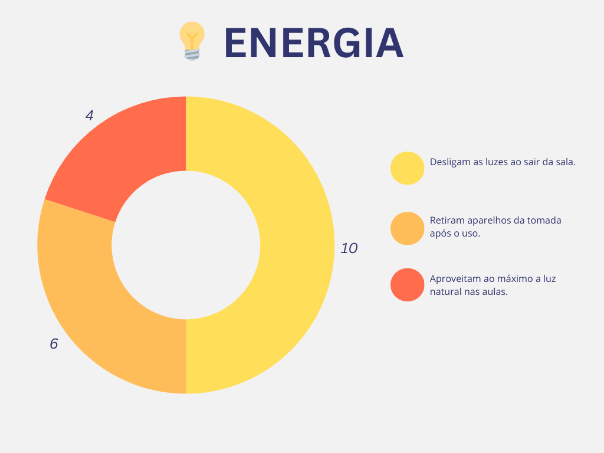
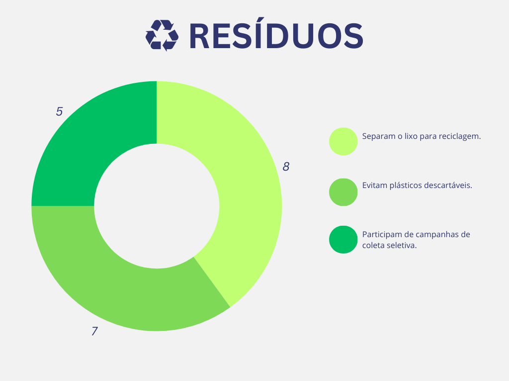
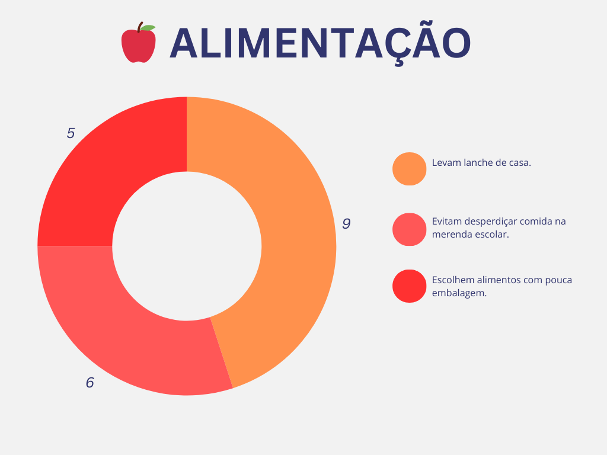
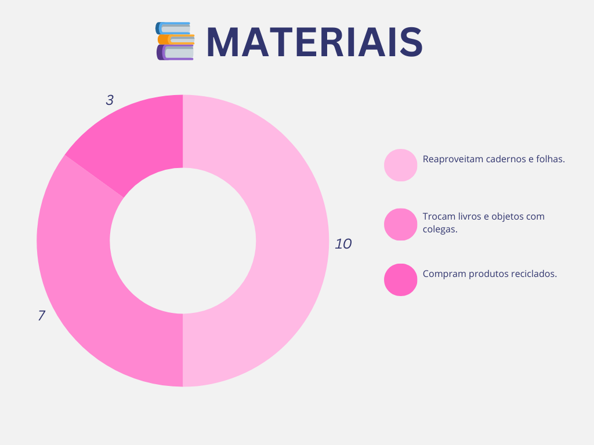
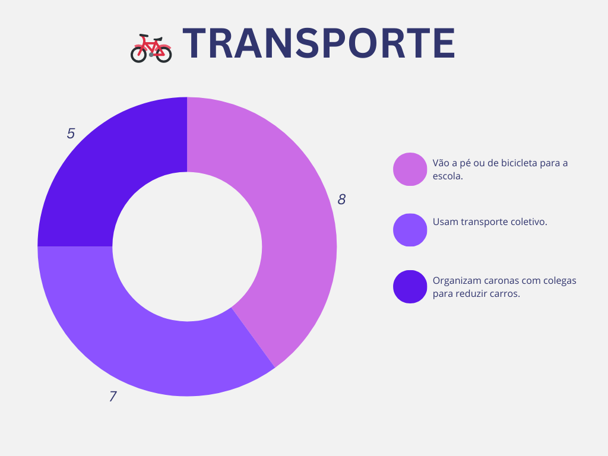
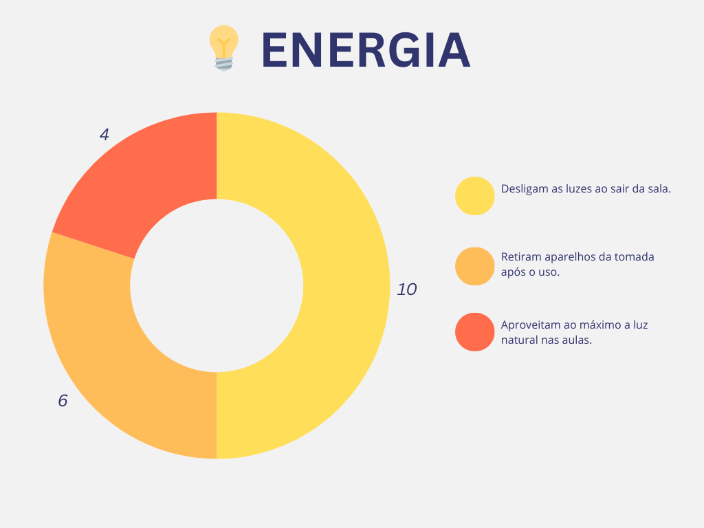
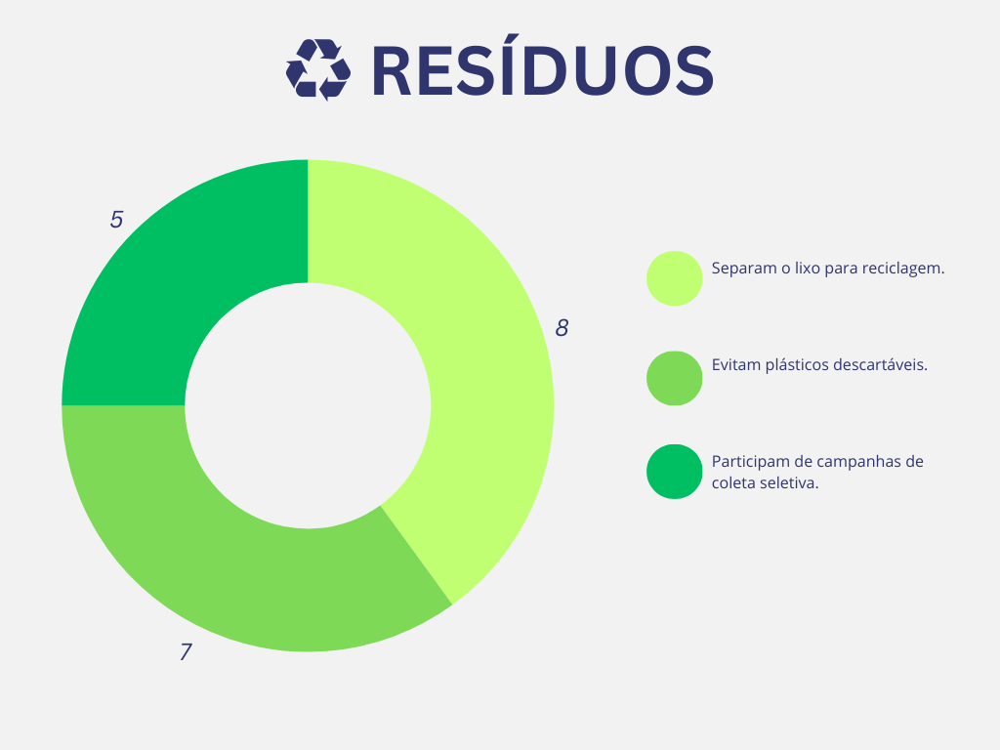
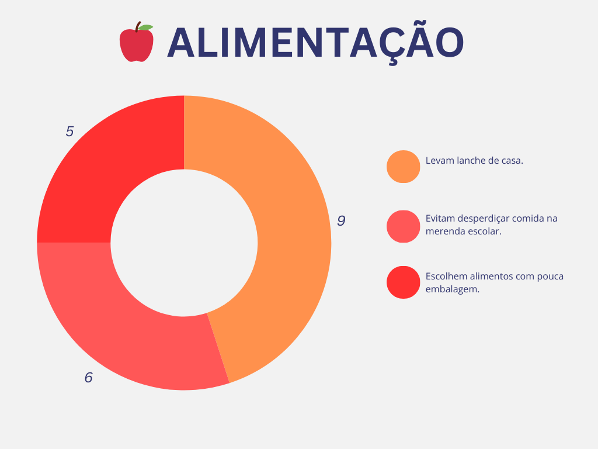
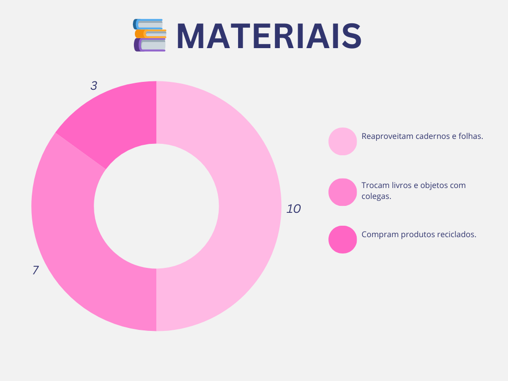
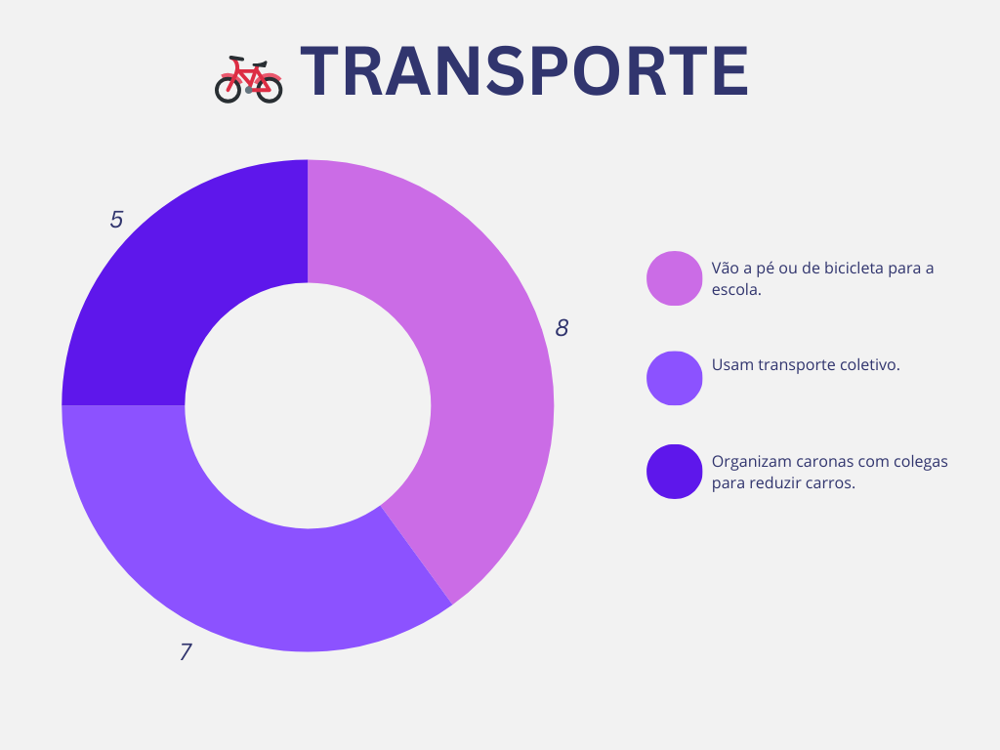

Mapeamento de Iniciativas Sustentáveis na Comunidade
Identificar e divulgar ações sustentáveis da comunidade local, fortalecendo a rede de pessoas e projetos que trabalham pelo meio ambiente.
Iniciativas sustentáveis são fundamentais para construirmos uma comunidade mais equilibrada e justa. Este mapeamento ajuda a conectar pessoas, divulgar projetos e incentivar novas práticas.
Nosso objetivo é reunir informações sobre hortas comunitárias, reciclagem, energias renováveis, mobilidade verde e outros exemplos de ações positivas para o planeta.
Cada morador pode contribuir: cadastrando iniciativas, participando de ações locais e incentivando vizinhos e familiares. Juntos, fortalecemos a rede de sustentabilidade.
Categorias
🌱 Agricultura
Hortas comunitárias, cultivo orgânico e produção local de alimentos.
💡 Energia
Uso de energias renováveis e eficiência energética em projetos comunitários.
♻️ Resíduos
Reciclagem, compostagem e redução de lixo.
🍎 Alimentação
Feiras de produtores locais e combate ao desperdício de alimentos.
📚 Educação Ambiental
Projetos escolares e oficinas sobre meio ambiente e sustentabilidade.
🚲 Transporte
Uso de bicicletas, transporte coletivo e caminhadas para reduzir poluição.
Infográficos
Veja os dados levantados na pesquisa com 20 moradores sobre práticas sustentáveis na comunidade.
 









Conclusão
O mapeamento de iniciativas sustentáveis é uma ferramenta poderosa para conectar pessoas e ampliar ações positivas na comunidade.
Participe cadastrando novos projetos e compartilhando informações. A mudança começa com cada atitude, por menor que pareça.
Juntos, podemos criar uma rede de apoio, aprendizado e ação em prol do planeta. Cada iniciativa conta e pode inspirar outras a nascer.